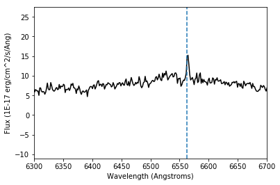
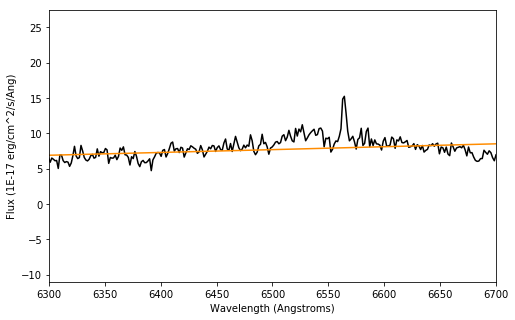
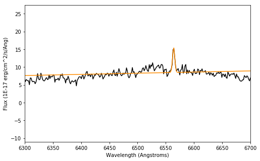
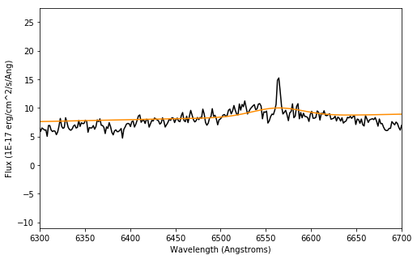
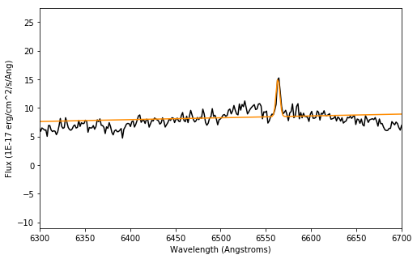
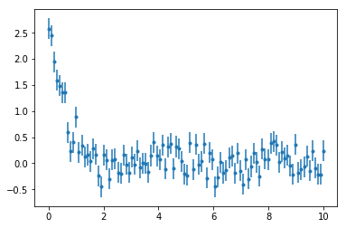
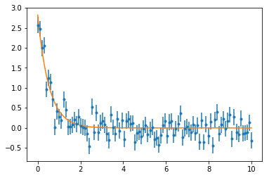
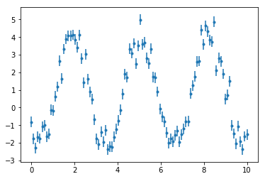
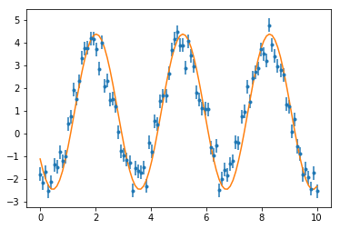
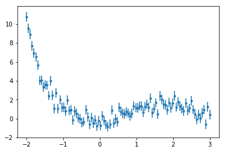

Rocio Kiman, Lia Corrales and Zé Vinícius.
Know and understand tools to make user defined models with
astropy and in which cases it could be useful
We will define models usign two different tools:
Compound models
Custom models
This tutorial assumes the student knows how to fit data using
astropy.modeling. This topic is covered in the Models-Quick-Fit
tutorial.
Modeling, User Defined Model, Custom Models, Compound Models
In this tutorial, we will learn how to define a new model in two ways: with a compound model and with a custom model.
In[1]:
import numpy as np
import matplotlib.pyplot as plt
from astropy.io import fits
from astropy.modeling import models, fitting
from astropy.modeling.models import custom_model
from astropy.modeling import Fittable1DModel, Parameter
from astroquery.sdss import SDSS
Out[1]:
/home/circleci/project/venv/lib/python3.6/site-packages/astroquery/sdss/__init__.py:29: UserWarning: Experimental: SDSS has not yet been refactored to have its API match the rest of astroquery (but it's nearly there).
warnings.warn("Experimental: SDSS has not yet been refactored to have its API "
astropy.modeling¶M dwarfs are low mass stars (less than half of the mass of the sun).
Currently we do not understand completely the physics inside low mass
stars because they do not behave the same way higher mass stars do. For
example, they stay magnetically active longer than higher mass stars.
One way to measure magnetic activity is the height of the
:math:`Halpha <https://en.wikipedia.org/wiki/H-alpha>`__ emission
line. It is located at \(6563\) Angstroms at the spectrum.
Let’s search for a spectrum of an M dwarf in the Sloan Digital Sky Survey (SDSS). First, we are going to look for the spectrum in the SDSS database. SDSS has a particular way to identify the stars it observes: it uses three numbers: Plate, Fiber and MJD (Modified Julian Date). The star we are going to use has: * Plate: 1349 * Fiber: 216 * MJD: 52797
So go ahead, put this numbers in the website and click on Plot to visualize the spectrum. Try to localize the \(H\alpha\) line.
We could download the spectrum by hand from this website, but we are
going to import it using the
SDSSClass
from
`astroquery.sdss <https://astroquery.readthedocs.io/en/latest/sdss/sdss.html#module-astroquery.sdss>`__.
We can get the spectrum using the plate, fiber and mjd in the following
way:
In[2]:
spectrum = SDSS.get_spectra(plate=1349, fiberID=216, mjd=52797)[0]
Out[2]:
/home/circleci/project/venv/lib/python3.6/site-packages/astroquery/sdss/core.py:856: VisibleDeprecationWarning: Reading unicode strings without specifying the encoding argument is deprecated. Set the encoding, use None for the system default.
comments='#'))
One way to check what is inside the fits file spectrum is the
following:
In[3]:
spectrum[1].columns
Out[3]:
ColDefs(
name = 'flux'; format = 'E'
name = 'loglam'; format = 'E'
name = 'ivar'; format = 'E'
name = 'and_mask'; format = 'J'
name = 'or_mask'; format = 'J'
name = 'wdisp'; format = 'E'
name = 'sky'; format = 'E'
name = 'model'; format = 'E'
)
To plot the spectrum we need the flux of light as a function of the wavelength (usually called lambda or \(\lambda\)). Note that the wavelength is in log scale: loglam, so we are going to calculate \(10^\lambda\) to remove this scale.
In[4]:
flux = spectrum[1].data['flux']
lam = 10**(spectrum[1].data['loglam'])
Each fits file is different according to what the person who made it
wanted to include and how the observation was made. The information
about the file usually is in fitsfile[0].header. We would like to
have the units from the flux and wavelength. For SDSS spectrum we found
where the units are in this SDSS
tutorial:
In[5]:
#Units of the flux
units_flux = spectrum[0].header['bunit']
print(units_flux)
Out[5]:
1E-17 erg/cm^2/s/Ang
In[6]:
#Units of the wavelegth
units_wavelength_full = spectrum[0].header['WAT1_001']
print(units_wavelength_full)
Out[6]:
wtype=linear label=Wavelength units=Angstroms
We are going to select only the characters of the unit we care about: Angstroms
In[7]:
units_wavelength = units_wavelength_full[36:]
print(units_wavelength)
Out[7]:
Angstroms
Now we are ready to plot the spectrum with all the information.
In[8]:
plt.plot(lam, flux, color='k')
plt.xlim(6300,6700)
plt.axvline(x=6563, linestyle='--')
plt.xlabel('Wavelength ({})'.format(units_wavelength))
plt.ylabel('Flux ({})'.format(units_flux))
plt.show()
Out[8]:
We just plotted our spectrum! Check different ranges of wavelength to see how the full spectrum looks like in comparison to the one we saw before.
The blue dashed line marks the \(H\alpha\) emission line. We can tell this is an active star because it has a strong emission line.
Now, we would like to measure the height of this line. Let’s use
astropy.modeling to fit a gaussian to the \(H\alpha\) line. We
are going to initialize a gaussian model at the position of the
\(H\alpha\) line. The idea is that the gaussian amplitude will tell
us the height of the line.
We are going to go quickly over this part of the tutorial because it
involves fitting with astropy.modeling and this was explained in the
Models-Quick-Fit
tutorial.
In[9]:
gausian_model = models.Gaussian1D(1, 6563, 10)
fitter = fitting.LevMarLSQFitter()
gaussian_fit = fitter(gausian_model, lam, flux)
Let’s plot the results.
In[10]:
plt.figure(figsize=(8,5))
plt.plot(lam, flux, color='k')
plt.plot(lam, gaussian_fit(lam), color='darkorange')
plt.xlim(6300,6700)
plt.xlabel('Wavelength (Angstroms)')
plt.ylabel('Flux ({})'.format(units_flux))
plt.show()
Out[10]:
We can see the fit is not doing a good job. Let’s print the parameters of this fit:
In[11]:
print(gaussian_fit)
Out[11]:
Model: Gaussian1D
Inputs: ('x',)
Outputs: ('y',)
Model set size: 1
Parameters:
amplitude mean stddev
----------------- ----------------- ------------------
16.75070626907759 9456.749523005932 2368.3957026986304
Go back to the previous plot and try to make the fit work. Note: Do not spend more than 10 minutes in this exercise. A couple of ideas to try: * Is it not working because of the model we chose to fit? You can find more models to use here. * Is it not working because of the fitter we chose? * Is it not working because of the range of data we are fitting? * Is it not working because how we are plotting the data?
One model is not enough to make this fit work. We need to combine a
couple of models to make a compound
model
in astropy. The idea is that we can sum, rest, divide or multiply
models that already exist in
`astropy.modeling <http://docs.astropy.org/en/stable/modeling/#models-and-fitting-astropy-modeling>`__
and fit the compound model to our data.
For our problem we are going to combine the gaussian with a polynomial of degree 1 to account for the background spectrum close to the \(H\alpha\) line. Take a look at the plot we made before to convince yourself that this is the case.
Now let’s make our compound model!
In[12]:
compound_model = models.Gaussian1D(1, 6563, 10) + models.Polynomial1D(degree=1)
After this point, the algorithm to fit the data works exactly the same as before except we use a compound model instead of the gaussian model.
In[13]:
fitter = fitting.LevMarLSQFitter()
compound_fit = fitter(compound_model, lam, flux)
In[14]:
plt.figure(figsize=(8,5))
plt.plot(lam, flux, color='k')
plt.plot(lam, compound_fit(lam), color='darkorange')
plt.xlim(6300,6700)
plt.xlabel('Wavelength (Angstroms)')
plt.ylabel('Flux ({})'.format(units_flux))
plt.show()
Out[14]:
It works! Let’s take a look to the fit we just made.
In[15]:
print(compound_fit)
Out[15]:
Model: CompoundModel0
Inputs: ('x',)
Outputs: ('y',)
Model set size: 1
Expression: [0] + [1]
Components:
[0]: <Gaussian1D(amplitude=1., mean=6563., stddev=10.)>
[1]: <Polynomial1D(1, c0=0., c1=0.)>
Parameters:
amplitude_0 mean_0 ... c1_1
----------------- ------------------ ... --------------------
7.020891699420025 6564.1363171649145 ... 0.003239952049620112
Let’s print all the parameters in a fancy way:
In[16]:
for x,y in zip(compound_fit.param_names, compound_fit.parameters):
print(x,y)
Out[16]:
amplitude_0 7.020891699420025
mean_0 6564.1363171649145
stddev_0 1.9776147858047488
c0_1 -12.793356164944736
c1_1 0.003239952049620112
We can see that the result includes all the fit parameters from the gaussian (mean, std and amplitude) and the two coefficients from the polynomial of degree 1. So now if we want to see just the amplitude:
In[17]:
compound_fit.amplitude_0
Out[17]:
Parameter('amplitude_0', value=7.020891699420025)
Conclusions: What was the difference between the first simple Gaussian and the compound model? The linear model that we added up to the gaussian model allowed the base of the Gaussian fit to have a slope and a background level. Normal Gaussians go to zero at \(\pm \inf\); this one doesn’t.
The mean value of the gaussian from our previous model indicates where
the \(H\alpha\) line is. In our fit result, we can tell that it is a
little off from \(6563\) Angstroms. One way to fix this is to fix
some of the parameters of the model. In astropy.modeling these are
called `fixed
parameters <http://docs.astropy.org/en/stable/api/astropy.modeling.Parameter.html#astropy.modeling.Parameter.fixed>`__.
In[18]:
compound_model_fixed = models.Gaussian1D(1, 6563, 10) + models.Polynomial1D(degree=1)
compound_model_fixed.mean_0.fixed = True
Now let’s use this new model with a fixed parameter to fit the data the same way we did before.
In[19]:
fitter = fitting.LevMarLSQFitter()
compound_fit_fixed = fitter(compound_model_fixed, lam, flux)
In[20]:
plt.figure(figsize=(8,5))
plt.plot(lam, flux, color='k')
plt.plot(lam, compound_fit_fixed(lam), color='darkorange')
plt.xlim(6300,6700)
plt.xlabel('Wavelength (Angstroms)')
plt.ylabel('Flux ({})'.format(units_flux))
plt.show()
Out[20]:
In[21]:
print(compound_fit_fixed)
Out[21]:
Model: CompoundModel1
Inputs: ('x',)
Outputs: ('y',)
Model set size: 1
Expression: [0] + [1]
Components:
[0]: <Gaussian1D(amplitude=1., mean=6563., stddev=10.)>
[1]: <Polynomial1D(1, c0=0., c1=0.)>
Parameters:
amplitude_0 mean_0 ... c0_1 c1_1
------------------ ------ ... ------------------- --------------------
1.5325722844012764 6563.0 ... -12.791029980456878 0.003237448622613733
We can see in the plot that the height of the fit does not match the \(H\alpha\) line height. What happend here is that we were too strict with the mean value, so we did not get a good fit. But the mean value is where we want it! Let’s loosen this condition a little. Another thing we can do is to define a **minimum and maximum value** for the mean.
In[22]:
compound_model_bounded = models.Gaussian1D(1, 6563, 10) + models.Polynomial1D(degree=1)
delta = 0.5
compound_model_bounded.mean_0.max = 6563 + delta
compound_model_bounded.mean_0.min = 6563 - delta
fitter = fitting.LevMarLSQFitter()
compound_fit_bounded = fitter(compound_model_bounded, lam, flux)
In[23]:
plt.figure(figsize=(8,5))
plt.plot(lam, flux, color='k')
plt.plot(lam, compound_fit_bounded(lam), color='darkorange')
plt.xlim(6300,6700)
plt.xlabel('Wavelength (Angstroms)')
plt.ylabel('Flux ({})'.format(units_flux))
plt.show()
Out[23]:
In[24]:
print(compound_fit_bounded)
Out[24]:
Model: CompoundModel2
Inputs: ('x',)
Outputs: ('y',)
Model set size: 1
Expression: [0] + [1]
Components:
[0]: <Gaussian1D(amplitude=1., mean=6563., stddev=10.)>
[1]: <Polynomial1D(1, c0=0., c1=0.)>
Parameters:
amplitude_0 mean_0 ... c0_1 c1_1
----------------- ------ ... ------------------- -------------------
6.657305353992826 6563.5 ... -12.793362521502136 0.00323995002187704
Better! By loosening the condition we added to the mean value, we got a better fit and the mean of the gaussian is closer to where we want it.
Modify the value of delta to change the minimum and maximum values for the mean of the gaussian. Look for: * The better delta so the mean is closer to the real value of the \(H\alpha\) line. * What is the minimum delta for which the fit is still good according to the plot?
What should you do if you need a model that astropy.modeling doesn’t
provide? To solve that problem, Astropy has another tool called custom
model. Using
this tool, we can create any model we want.
We use the basic custom model when we need a simple function to fit and the full custom model when we need a more complex function. Let’s use an example to understand each one of the custom models.
An Exponential Model is not provided by Astropy models. Let’s see one example of basic custom model for this case. First, let’s simulate a dataset that follows an exponential:
In[25]:
x1 = np.linspace(0,10,100)
a = 3
b = -2
c = 0
y1 = a*np.exp(b*x1+c)
y1 += np.random.normal(0., 0.2, x1.shape)
y1_err = np.ones(x1.shape)*0.2
In[26]:
plt.errorbar(x1 , y1, yerr=y1_err, fmt='.')
plt.show()
Out[26]:
We can define a simple custom model by specifying which parameters we want to fit.
In[27]:
@custom_model
def exponential(x, a=1., b=1., c=1.):
'''
f(x)=a*exp(b*x + c)
'''
return a*np.exp(b*x+c)
Now we have one more available model to use in the same way we fit data
with astropy.modeling.
In[28]:
exp_model = exponential(1.,-1.,1.)
fitter = fitting.LevMarLSQFitter()
exp_fit = fitter(exp_model, x1, y1, weights = 1.0/y1_err**2)
In[29]:
plt.errorbar(x1 , y1, yerr=y1_err, fmt='.')
plt.plot(x1, exp_fit(x1))
plt.show()
Out[29]:
In[30]:
print(exp_fit)
Out[30]:
Model: exponential
Inputs: ('x',)
Outputs: ('x',)
Model set size: 1
Parameters:
a b c
------------------ ------------------ ------------------
1.1168977772934885 -2.177985079165993 1.0596441519375108
The fit looks good in the plot. Let’s check the parameters and the Reduced Chi Square value, which will give us information about the goodness of the fit.
In[31]:
def calc_reduced_chi_square(fit, x, y, yerr, N, n_free):
'''
fit (array) values for the fit
x,y,yerr (arrays) data
N total number of points
n_free number of parameters we are fitting
'''
return 1.0/(N-n_free)*sum(((fit - y)/yerr)**2)
In[32]:
calc_reduced_chi_square(exp_fit(x1), x1, y1, y1_err, len(x1), 3)
Out[32]:
1.0537921791278642
The Reduced Chi Square value is close to 1. Great! This means our fit is good, and we can corroborate it by comparing the values we got for the parameters and the ones we used to simulate the data.
Note: Fits of non-linear parameters (like in our example) are extremely dependent on initial conditions. Pay attention to the initial conditions you select.
Modify the initial conditions of the fit and check yourself the relation between the best fit parameters and the initial conditions for the previous example. You can check it by looking at the Reduced Chi Square value: if it gets closer to 1 the fit is better and vice versa. To compare the quality of the fits you can take note of the Reduced Chi Square value you get for each initial condition.
What if we want to use a model from astropy.modeling, but with a
different set of parameters? One example is the Sine
Model.
It has a very particular definition of the frequency and phase. Let’s
define a new Sine function with a full custom model. Again, first let’s
create a simulated dataset.
In[33]:
x2 = np.linspace(0,10,100)
a = 3
b = 2
c = 4
d = 1
y2 = a*np.sin(b*x2+c)+d
y2 += np.random.normal(0., 0.5, x2.shape)
y2_err = np.ones(x2.shape)*0.3
In[34]:
plt.errorbar(x2, y2, yerr=y2_err, fmt='.')
plt.show()
Out[34]:
For the full custom model we can easily set the derivative of the
function, which is used by different
fitters, for
example the LevMarLSQFitter().
In[35]:
class SineNew(Fittable1DModel):
a = Parameter(default=1.)
b = Parameter(default=1.)
c = Parameter(default=1.)
d = Parameter(default=1.)
@staticmethod
def evaluate(x, a, b, c, d):
return a*np.sin(b*x+c)+d
@staticmethod
def fit_deriv(x, a, b, c, d):
d_a = np.sin(b*x+c)+d
d_b = a*np.cos(b*x+c)*x
d_c = a*np.sin(b*x+c)
d_d = np.ones(x.shape)
return [d_a, d_b, d_c, d_d]
Note Defining default values for the fit parameters allows to define
a model as model=SineNew()
We are going to fit the data with our new model. Once more, the fit is very sensitive to the initial conditions due to the non-linearity of the parameters.
In[36]:
sine_model = SineNew(a=4.,b=2.,c=4.,d=0.)
fitter = fitting.LevMarLSQFitter()
sine_fit = fitter(sine_model, x2, y2, weights = 1.0/y2_err**2)
In[37]:
plt.errorbar(x2, y2, yerr=y2_err, fmt='.')
plt.plot(x2,sine_fit(x2))
plt.show()
Out[37]:
In[38]:
print(sine_fit)
Out[38]:
Model: SineNew
Inputs: ('x',)
Outputs: ('y',)
Model set size: 1
Parameters:
a b c d
----------------- ------------------ ----------------- ------------------
2.987625474146915 2.0294994083242295 3.825440793322813 1.0354454863380704
In[39]:
calc_reduced_chi_square(sine_fit(x2), x2, y2, y2_err, len(x2), 3)
Out[39]:
2.6043834889994852
The Reduced Chi Squared value is showing the same as the plot: this fit could be improved. The Reduced Chi Squared is not close to 1 and the fit is off by small phase.
Play with the initial values for the last fit and improve the Reduced Chi Squared value.
Note: A fancy way of doing this would be to code a function which iterates over different initial conditions, optimizing the Reduced Chi Squared value. No need to do it here, but feel free to try.
Custom models are also useful when we want to fit an unusual function to our data. As an example, create a full custom model to fit the following data.
In[40]:
x3 = np.linspace(-2,3,100)
y3 = x3**2* np.exp(-0.5 * (x3)**3 / 2**2)
y3 += np.random.normal(0., 0.5, x3.shape)
y3_err = np.ones(x3.shape)*0.5
In[41]:
plt.errorbar(x3,y3,yerr=y3_err,fmt='.')
plt.show()
Out[41]:
In[None]: